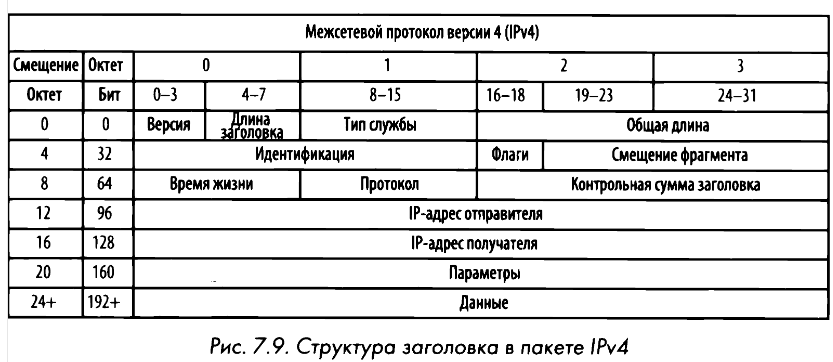
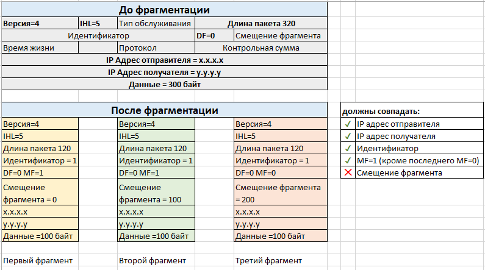

IPv4
IPv4 является 32-битным, но для удобства представлен в десятичном формате. Четыре числа от 0 до 255 записываются через точку. Адрес состоит из 2 частей: номер сети и номер узла (хоста). Разделение происходит с помощью маски сети, ещё называемой маски подсети.
Хосты имеют внутренние и внешние (белые) IP-адреса. Внутренние используются для подключения к локальной сети, а внешние с глобальными сетями. IP-адреса могут быть статическими (их устанавливает пользователь), либо динамическими, которые автоматически выдаются DHCP-сервером.
Диапазоны частных адресов IPv4:
- класс A — 10.0.0.0 — 10.255.255.255;
- класс B — 172.16.0.0 — 172.31.255.255;
- класс C — 192.168.0.0 — 192.168.255.255.
Класс A используется корпорациями, класс B предназначен для малых/средних/крупных компаний, а класс C подходит для домашних пользователей и малых/домашних офисов.

Фрагментация
Фрагментация пакетов - это средство протокола IP, oбeспечивающее надежную доставку данных по разнотипным сетям путем разбиения потока данных на мелкие фрагменты. Фрагментация пакетов основывается на размере максимального передаваемого блока (MTU, Maximum Transmission Unit) для протокола второго канального уровня, а также конфигурации устройств, применяющих этот протокол.
Процесс фрагментации:
- Деление данных на фрагменты;
- В поле общей длины (Total Length) каждого IР-заголовка задается размер сегмента для каждого фрагмента;
- Во всех пакетах, кроме последнего в потоке данных, устанавливается флаг Мoге fragments (Дополнительные фрагменты);
- В поле смещения фрагмента (Fragment offset) задается конкретное смещение для текущего фрагмента, которое он должен занимать в потоке данных.
- Далее пакеты передаются по сети.

Обычно необходимость во фрагментации возникает на стыковке сетей с различными технологиями канального уровня, например, Ethernet, ATM, FDDI, Token Ring и так далее. Кадры данных технологий имеют различную длину, которая называется MTU (Maximum Transmission Unit) - максимальный объем данных, который может уместиться в одном кадре. Например, в Ethernet MTU равен 1500, в FDDI - 4096. Кадр FDDI не сможет поместиться в кадре Ethernet, поэтому на этот случай и предусмотрен механизм фрагментации пакетов на сетевом уровне.